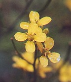
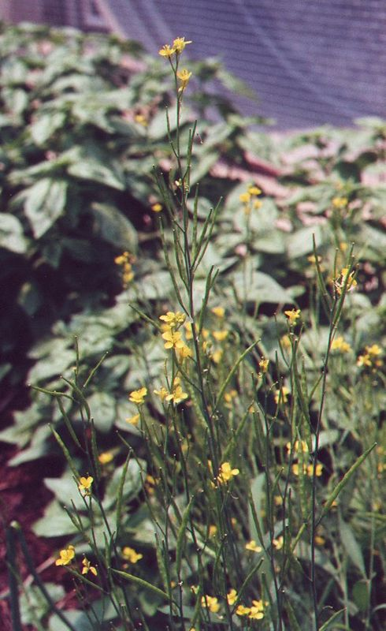

Brassica
nigra (L.) Koch
Taxonomic Details

----- Correct Name
----- Classification
----- Synonyms
----- Common Names
Other Biological Details
----- Habit and Habitat
----- Diagnostic Features
----- Reproductive Biology
---------- Breeding System
---------- Phenology
---------- Pollinators
---------- Seed Biology
----------Seed Germination
----------Cultivation
----- Major Pests and Diseases
Economic Potential and Uses
----- Parts Used
-----Uses
----- Harvesting Practices
----- Produce and Products
----- Chemistry
----- Processing Techniques
----- Other uses
----- Economic Potential to the Country
----- Export Potential
Miscellaneous Information
Literature
Taxonomic
Details
Correct Name: Brassica nigra (L.) Koch

Family: Cruciferaceae
Synonyms : Sinapis erysimoides; Sinapis
nigra.;
Common Names :
English: Black mustard, Mustard, True Mustard,
Hindi: Aslrai, Banarasi rai. Ghorrai, Jagrai, Kalirai, Krimika, Krishnasarshapa,
Krishnika, Kshava, Kshavaka, Kshudhabhijanana, Kshujjanika, Kshutabhijanaka, Kshutaka,
Lahi Taramira, Tikshnagandha, Tira
Tamil: Jwalanti,Jwalatprabha,Kadugu,Kadugu
Telugu: Asuri, Atitikshva, Avalu
Kannada: Sasive
Marati: Mohari,Mohri,Rai,
Back to Top
Other
Biological Details
HABIT & HABITAT :
This is a cultivated crop species.This can
be seen in Cultivated fields and Plains,Ditches,Open areas, Run wild,
BioticZone: Hindukush himalaya,Tropics,
Misc: Boripada,Jogimatti (State Forest),Kumbhala,Manasagangotri,none,Sub tropical
and temperate himalayan Zone,
Availability :
Country: Central Europe, India, Mediterranean, Tibet,
Zone: Central, North, North East ,South, West,
State: Arunachal Pradesh,Goa Daman Diu,Himachal Pradesh,Karnataka,Madhya Pradesh,Maharashtra,none,Rajasthan,Tamil
Nadu,Uttar Pradesh,
District: Bangalore,Chamoli, Chandrapur, Chikmaglore, Chitradurga, Ganganagar,
Indore, Kangra, Kinnaur, Kodagu, Mysore, Nasik,
Taluk: Suratgarh,
Status :
Back to Top
DIAGNOSTIC
FEATURES
This species is highly self fertile and is
quite distinct from other brassicas. The fruits at maturity are closely oppressed
to the inflorescence axis. The seed coat shows fine reticulations under a lens,
and is mucilaginous. The outer epidermis is covered with a thin cuticle.
Back to Top
REPRODUCTIVE BIOLOGY
:
Breeding System :
Phenology :
Flowering occurs from May.-Sept.
Pollinators:
Seed Biology :
Seed Germination:
Cultivation :
Brassica nigra has been
cultivated in Europe since 13th century and is now reported to be growing wild.
It appears to have been introduced only comparatively recently in to India and
is a cold season crop, grown to a limited extent in the U.P., the Punjab, N.W.F.P.
and Madras. It doesnot contribute to the supplies of Mustard oil.
Back to Top
Major Pests and Diseases:
Pests:
Diseases:
Back to Top
Economic
Potential and Uses
Parts used:
Seeds
Uses:
- In India, the seeds of black mustard are used in pickles and
curries.
Harvesting Practices
Produce and Products
Table mustard, Bath mustard, mustard bran and mustard flour
Back to Top
Chemistry : The seeds contain : moisture 7.6 ;N-
substances 29.1; N-free extract, 19.2; ether extract,28.2; crude fibre, 11; and
ash,5% (Whemer,I,405),the seeds yield 27-33% of fixed oil.
Back to Top
Processing Techniques
For the preparation of volatile oil,the fixed oil is first expressed from the
seeds, which are subsequently macerated with tepid waterfor several hours and
steem distilled. The oil obtained is an extremely powerful irritant owing to it's
volatility and penetrating power, and is responsible for the painful nature of
blisterscaused by mustard. Diluted with 50 times it's volume of alcohol, or in
the form of liniment, it is employed as a counter- irritant and rubefacient.
The Black mustard is ground with White mustard for preparing Table mustard and
also various various medicinal mustard preparations such as Bath mustard, mustard
bran and mustard flour.
Back to Top
Other Uses
-
The volatile oil obtained is an extremely powerful irritant owing to it's volatility
and penetrating power, and is responsible for the painful nature of blisters
caused
by mustard. Diluted with 50 times it's volume of alcohol, or in the form of liniment,
it is employed as a counter- irritant and rubefacient.
- It is also used in cases of pleurisy and pneumonia.
The technical oil obtained during the preparation of mustard also contains the
oil from white mustard seeds. In Europe it is used for making soap, for burning
and as a lubricant.
Back to Top
Economical
Potential to the country
Back to Top
Export Potential
Back to Top
Miscellaneous
Information
Back to Top
Literature
- The wealth of India, A
Dictionary of Indian Raw Materials and Industrial Products, Vol. I. A-B,
Publications and Information Directorate, CSIR, New Delhi, India, 1948.
- Yoganarasimhan, S.N. Medicinal plants of India
Back to Top